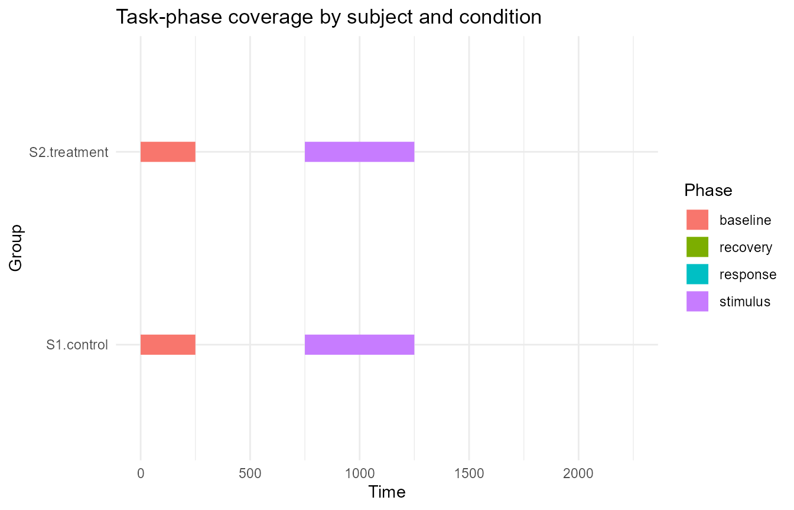
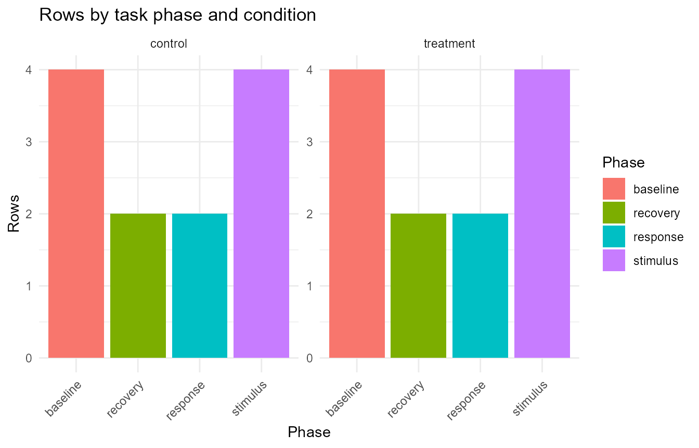

Task-phase segmentation and coverage reporting
Source:vignettes/articles/phase-segmentation-reporting.Rmd
phase-segmentation-reporting.RmdThis article demonstrates helpers for assigning Gazepoint-style samples to declared task phases and summarising phase-level data coverage. These helpers are descriptive. They do not infer experimental phases, define exclusion rules, or replace study-specific preprocessing decisions.
Example data and phase windows
A typical eye-tracking task may include baseline, stimulus, response, and recovery periods. The phase windows should be declared explicitly by the analyst.
gaze_data <- data.frame(
subject = rep(c("S1", "S2"), each = 12),
trial = rep(rep(1:2, each = 6), times = 2),
condition = rep(c("control", "treatment"), each = 12),
time_ms = rep(c(0, 250, 750, 1250, 1750, 2250), times = 4),
pupil = c(
3.1, 3.0, 3.2, 3.3, NA, 3.2,
3.0, 3.1, 3.3, 3.4, 3.5, 3.4,
3.2, NA, 3.4, 3.5, 3.6, 3.5,
3.1, 3.2, 3.3, NA, 3.4, 3.3
)
)
phase_windows <- data.frame(
phase = c("baseline", "stimulus", "response", "recovery"),
start = c(0, 500, 1500, 2000),
end = c(500, 1500, 2000, 2500)
)
phase_windows
#> phase start end
#> 1 baseline 0 500
#> 2 stimulus 500 1500
#> 3 response 1500 2000
#> 4 recovery 2000 2500Segment samples into task phases
segment_gazepoint_task_phases() assigns each row to the
first declared phase window that contains its timestamp. Rows outside
the declared windows are labelled separately.
segmented <- segment_gazepoint_task_phases(
gaze_data,
time_col = "time_ms",
phase_windows = phase_windows,
keep_window_metadata = TRUE
)
head(segmented)
#> subject trial condition time_ms pupil task_phase .gp3_phase_assigned
#> 1 S1 1 control 0 3.1 baseline TRUE
#> 2 S1 1 control 250 3.0 baseline TRUE
#> 3 S1 1 control 750 3.2 stimulus TRUE
#> 4 S1 1 control 1250 3.3 stimulus TRUE
#> 5 S1 1 control 1750 NA response TRUE
#> 6 S1 1 control 2250 3.2 recovery TRUE
#> .gp3_phase_window_start .gp3_phase_window_end
#> 1 0 500
#> 2 0 500
#> 3 500 1500
#> 4 500 1500
#> 5 1500 2000
#> 6 2000 2500The helper records whether each row was assigned to a declared phase.
Summarise phase coverage
summarize_gazepoint_phase_coverage() summarises row
counts, timing, and optional complete-value coverage by phase and
group.
phase_coverage <- summarize_gazepoint_phase_coverage(
segmented,
phase_col = "task_phase",
group_cols = c("subject", "condition"),
time_col = "time_ms",
value_cols = "pupil"
)
phase_coverage
#> group_id phase n_rows n_finite_time min_time max_time time_span
#> 1 S1.control baseline 4 4 0 250 250
#> 2 S1.control recovery 2 2 2250 2250 0
#> 3 S1.control response 2 2 1750 1750 0
#> 4 S1.control stimulus 4 4 750 1250 500
#> 5 S2.treatment baseline 4 4 0 250 250
#> 6 S2.treatment recovery 2 2 2250 2250 0
#> 7 S2.treatment response 2 2 1750 1750 0
#> 8 S2.treatment stimulus 4 4 750 1250 500
#> n_complete_value_rows complete_value_rate n_any_value_missing
#> 1 4 1.00 0
#> 2 2 1.00 0
#> 3 1 0.50 1
#> 4 4 1.00 0
#> 5 3 0.75 1
#> 6 2 1.00 0
#> 7 2 1.00 0
#> 8 3 0.75 1
#> any_value_missing_rate
#> 1 0.00
#> 2 0.00
#> 3 0.50
#> 4 0.00
#> 5 0.25
#> 6 0.00
#> 7 0.00
#> 8 0.25The British spelling alias is also available.
summarise_gazepoint_phase_coverage(
segmented,
phase_col = "task_phase",
time_col = "time_ms",
value_cols = "pupil"
)
#> group_id phase n_rows n_finite_time min_time max_time time_span
#> 1 all baseline 8 8 0 250 250
#> 2 all recovery 4 4 2250 2250 0
#> 3 all response 4 4 1750 1750 0
#> 4 all stimulus 8 8 750 1250 500
#> n_complete_value_rows complete_value_rate n_any_value_missing
#> 1 7 0.875 1
#> 2 4 1.000 0
#> 3 3 0.750 1
#> 4 7 0.875 1
#> any_value_missing_rate
#> 1 0.125
#> 2 0.000
#> 3 0.250
#> 4 0.125Plot phase timing
plot_gazepoint_phase_timeline() visualises the timing
coverage of each phase. When timing information is available, it draws
phase intervals by group.
plot_gazepoint_phase_timeline(
segmented,
phase_col = "task_phase",
group_cols = c("subject", "condition"),
time_col = "time_ms",
title = "Task-phase coverage by subject and condition"
)
If timing information is not supplied, the same function falls back to a descriptive count plot.
plot_gazepoint_phase_timeline(
segmented,
phase_col = "task_phase",
group_cols = "condition",
title = "Rows by task phase and condition"
)
Generate cautious report text
report_gazepoint_phase_coverage() returns the summary
table, phase totals, overall diagnostics, and compact report text.
phase_report <- report_gazepoint_phase_coverage(
phase_coverage,
digits = 1
)
phase_report$overall
#> n_phases n_groups total_rows least_represented_phase
#> 1 4 2 24 recovery
#> least_represented_phase_rows weighted_complete_value_rate
#> 1 4 0.875
phase_report$phase_totals
#> phase n_rows
#> 1 baseline 8
#> 4 stimulus 8
#> 2 recovery 4
#> 3 response 4
phase_report$report_text
#> [1] "Task-phase coverage was summarized across 4 phase(s) and 2 group(s), representing 24 row(s). The least represented phase was 'recovery' with 4 row(s). The weighted complete-value rate across summarized phases was 87.5%. These values are descriptive data-coverage diagnostics and do not by themselves define exclusion decisions."The generated wording is deliberately cautious. Phase coverage summaries describe data availability within declared task windows; they do not by themselves justify exclusion, imputation, or modelling decisions.
Suggested workflow
A transparent task-phase workflow is:
- Declare phase windows from the experimental protocol.
- Segment samples using the declared timing table.
- Summarise row, timing, and value coverage by participant, trial, condition, or other grouping variables.
- Inspect the phase timeline visually.
- Report coverage diagnostics separately from exclusion decisions.